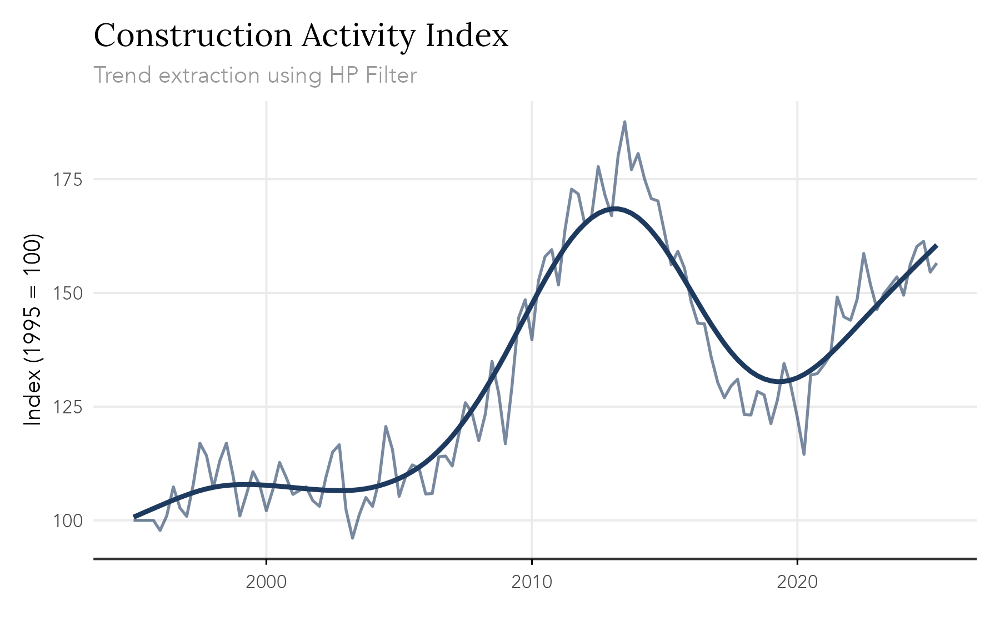
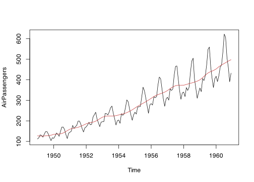

The goal of trendseries is to provide a modern, pipe-friendly interface for exploratory analysis of time series data in conventional data.frame format. Time series have a specific structure in R (ts) and most filtering methods are designed for ts objects. trendseries bridges this gap by keeping the data in a data.frame format and adding trend columns to the original dataset.
The philosophy of trendseries is to sacrifice some precision for simplicity and flexibility. In this sense, its mainly a companion for EDA and visualization pipelines.
Installation
trendseries is available on CRAN
install.packages("trendseries")You can install the development version of trendseries from GitHub.
# install.packages("remotes")
remotes::install_github("viniciusoike/trendseries")Main Functions
The package provides two main functions:
-
augment_trends(): adds trend columns totibble/data.frame/data.table. -
extract_trends(): extracts trends fromts/xts/zoo.
Usage
Time series have a specific structure in R (ts) and most filtering methods are designed for ts objects. However, datasets typically come in a data.frame format with a date column, which can make applying filters cumbersome.
trendseries aims to make this process easy and flexible. The example below computes three filters (HP, STL, and moving average) on a quarterly index of construction activity. Note that the augment_trends() function automatically detects the frequency of the data and uses conventional defaults for the HP filter.
library(trendseries)
library(ggplot2)
data(gdp_construction)
# Computes multiple trends at once
series <- gdp_construction |>
# Automatically detects frequency
# Trends are added as new columns to the original dataset
augment_trends(
value_col = "index",
methods = c("hp", "stl", "ma")
)
#> Auto-detected quarterly (4 obs/year)
#> Computing HP filter (two-sided) with lambda = 1600
#> Computing STL trend with s.window = periodic
#> Computing 2x4-period MA (auto-adjusted for even-window centering)
series
#> # A tibble: 122 × 5
#> date index trend_hp trend_stl trend_ma
#> <date> <dbl> <dbl> <dbl> <dbl>
#> 1 1995-01-01 100 101. 102. NA
#> 2 1995-04-01 100 101. 101. 99.7
#> 3 1995-07-01 100 102. 100. 99.6
#> 4 1995-10-01 100 103. 99.4 101.
#> 5 1996-01-01 97.8 103. 101. 102.
#> 6 1996-04-01 101. 104. 102. 103.
#> 7 1996-07-01 107. 104. 103. 104.
#> 8 1996-10-01 103. 105. 104. 106.
#> 9 1997-01-01 101. 106. 106. 109.
#> 10 1997-04-01 108. 106. 109. 111.
#> # ℹ 112 more rows
An equivalent extract_trends() function is also available for ts objects.
stl_trend <- extract_trends(AirPassengers, methods = "stl")
#> Computing STL trend with s.window = periodic
plot.ts(AirPassengers)
lines(stl_trend, col = "#C53030")
Available Methods
trendseries supports many trend estimation methods. The overall goal is to support the most commonly used methods in econometrics and statistics. A non-exhaustive list is presented below.
| Method | Description |
|---|---|
loess |
Local polynomial regression |
spline |
Smoothing splines |
poly |
Polynomial trends |
median |
Median filter |
stl |
Seasonal-trend decomposition |
ma |
Simple moving average |
wma |
Weighted moving average |
kalman |
Kalman filter/smoother |
ucm |
Unobserved components model |
hp |
Hodrick-Prescott filter |
hamilton |
Hamilton regression filter |
bk |
Baxter-King bandpass filter |
bn |
Beveridge-Nelson decomposition |
cf |
Christiano-Fitzgerald filter |